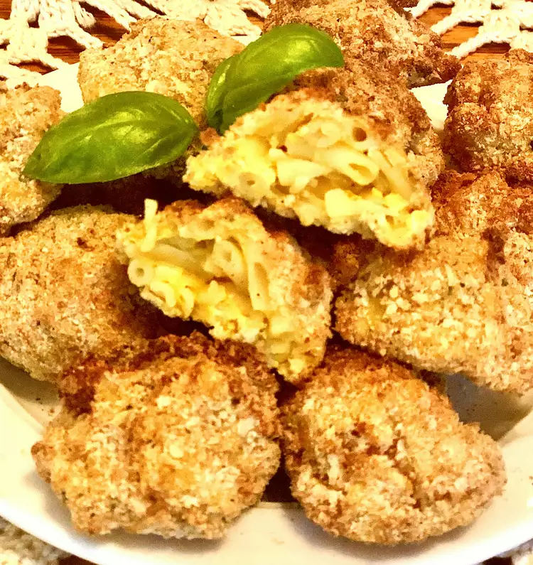

Air Fryer Mac and Cheese Balls

These air fryer mac and cheese bites make great little appetizers or
finger food. Kids love them!
-
Bring a large pot of water to a boil over high heat. Cook macaroni pasta
from the dinner package in boiling water, stirring occasionally, until
tender, 7 to 8 minutes. Drain; do not rinse. Return pasta to the pot.
-
Stir cheese sauce from the dinner package, milk, and margarine into
pasta. Mix in Cheddar cheese until well combined and cheese is melted.
Transfer macaroni and cheese to a bowl and refrigerate until firm, 2
hours to overnight.
-
Scoop chilled macaroni and cheese into 1 1/2-inch balls and place on a
parchment paper-lined baking sheet. Freeze for 1 hour.
-
Preheat an air fryer to 350 degrees F (175 degrees C) according to
manufacturer's instructions. Spray the basket with nonstick cooking
spray.
-
Place beaten eggs in a bowl. Mix together panko, bread crumbs, salt, and
garlic powder in a shallow bowl.
-
Dip each frozen macaroni and cheese ball in beaten eggs, then press in
bread crumb mixture to coat. Place coated balls into the prepared air
fryer basket in a single layer with space between; cook in batches if
necessary.
-
Cook in the preheated air fryer for 6 to 8 minutes. Turn over and fry
until golden brown, 3 to 4 minutes more.